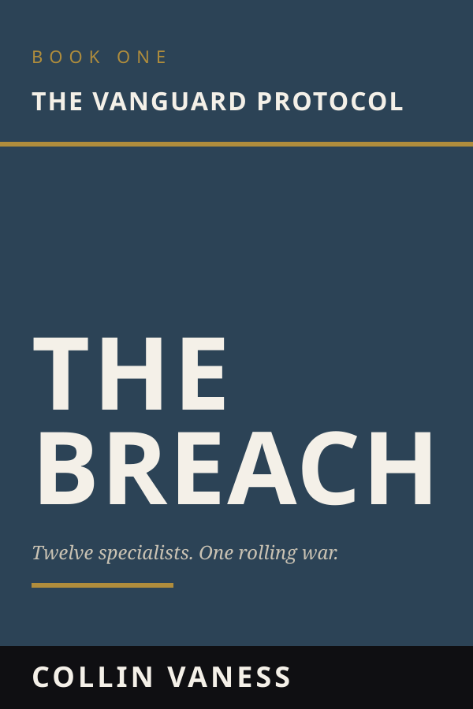

Techno-Thriller · 12 Books
The Vanguard Protocol
A Twelve-Volume Mosaic Techno-Thriller
Twelve specialists. Twelve overlapping missions. One war none of them can see in full — until the company they fight for becomes the enemy they have to destroy.
Get release news →
About the series
In the Republic of Odiristan, a Caspian state sitting atop the world’s encrypted-data backbone, a tier-one private military contractor takes a routine stabilization contract. What follows is twelve books of overlapping operations — a breacher in the marshes, an intel officer in a hide-site, a fixer cleaning up a frame job — each running their own mission, each catching a different piece of the same conspiracy.
Their employer, ARES, is selling the war to both sides. The man behind it has been waiting a decade for this. And the only way to stop the signal that is about to take over the western hemisphere’s automated infrastructure is for twelve specialists to stop running their own books and converge on a single target.
Every volume is a complete operation. Every operation is a piece of one rolling truth. An explosion heard in the distance by Oracle in Book Two is the climax of Book One. The evidence Wraith finds in Book Four is the proof Sterling needs in Book Six. The series is engineered to be re-read.
The first book

The Breach
Vanguard 1-1 — callsign Viper — has spent a career kicking down the right doors. When his team breaches a derelict Soviet lighthouse on the Caspian coast expecting local insurgents, they find something else: tier-one operators in disguise, a server stack already self-destructing, and a hard drive with a corporate logo no one on the team has ever seen. The bodies don’t add up. The man who killed them realises he’s been hunting the wrong enemy.
The mosaic
Twelve volumes. Twelve different lead operators. The same week, the same war, twelve different angles on it:
- 1 · The Breach — The bodies in the Lighthouse don’t add up.
- 2 · The Signal — The satellite jamming her drones is one of her own.
- 3 · The Asset — An asset he can’t trust, a marsh actively trying to kill them both.
- 4 · The Cleaners — Sent to sanitise a black site. Walks into a frame job already in progress.
- 5 · The Dark Site — Thirty minutes to clone a CEO before the security drones turn on the guests.
- 6 · Zero-Hour — The man who built the Vanguard Group fires off the books.
- 7 · The Long Watch — A sniper, alone in the mountains, between her team and a hunter-killer net.
- 8 · The Triage — In a Soviet bunker, a disgraced surgeon and a bleeding team.
- 9 · The Catalyst — Out of military explosives. Building an arsenal from industrial waste.
- 10 · The Extraction — A stolen National Guard helo, nap-of-the-earth, a city closing the net.
- 11 · The Boardroom — Economic warfare from a server room — until the men she sold out come for her in person.
- 12 · The Vanguard Protocol — The surviving specialists converge on the ARES Citadel.
For readers of
Brad Thor’s Scot Harvath, Mark Greaney’s Gray Man, Jack Carr’s James Reece, and Don Bentley’s Matt Drake.